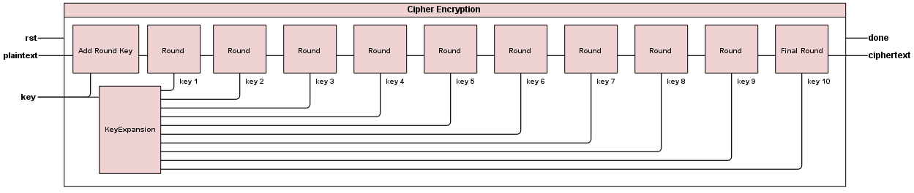
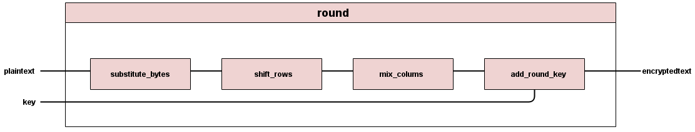
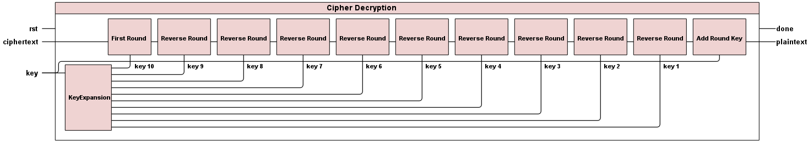
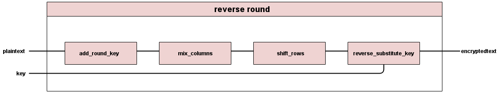
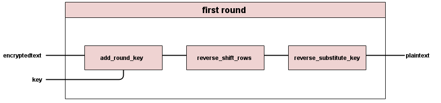

Schematics
Figures and diagrams detailing our encryptor and decryptor structure
We hope that these figures help you see how we created our code.
Encryption
The schematic of the high level encryption module shows that our AES encryptor is composed of Key Expansion module, Add Round Key module, Round module, and Final Round Module which are further explained below. Since there are nine intermediate rounds, we use the Round module nine times in sequence. Each Round takes the corresponding key from Key Expansion module in ascending order.


Each intermediate Round goes through four operations: substitute byte, shift rows, mix columns, and add round key.

The Final Round goes through three operations: substitute byte, shift rows, and add round key.
Decryption
The schematic of the high level decryption module shows that our AES decryptor is composed of Key Expansion module, First Round module, Reverse Round module, and Add Round Key module. Since there are nine intermediate rounds, we use the Reverse Round module nine times in sequence. Each Reverse Round takes the corresponding key from Key Expansion module in descending order.
Each intermediate Reverse Round goes through four operations: add round key, reverse mix columns, reverse shift rows, and reverse substitute byte.
The First Round goes through three operations: add round key, reverse shift rows, and reverse substitute byte.